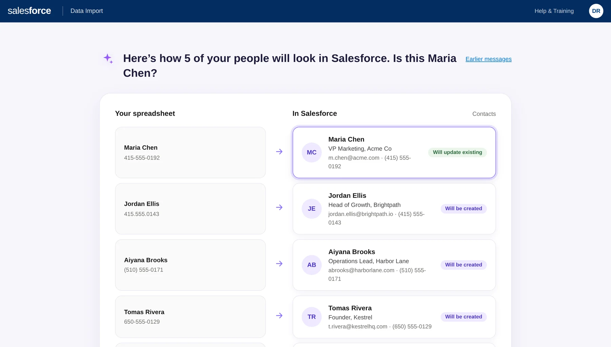

- The problem
- Salesforce had two import tools, customers had added three more, and admins couldn't find or trust any of them.
- I owned
- The end-to-end UX of the import: the path, the interaction model and the copy.
- What I did
- One wizard with one name and one place to start, and a preview and clean-up step before anything is saved.
- What happened
- Piloted in 2013 and released to every customer in 2014. Big imports now run in the background in batches. Competitors copied the flow.
- What it covers
- Working with a developer who had never worked with a designer, progressive disclosure under pressure, and an AI-forward redesign.
Four Screens, Four Decisions.


Two Tools, Neither Fully Functional
What I Inherited
Two import tools from two different teams, with different styles and different homes. Customers had added three more on the AppExchange, the Salesforce marketplace. Admins didn't know where to go or what to prep, and bad data kept breaking things. It had been piling up for years.
How I Found the Problem
I looked at 15+ competing import tools, including Oracle, Microsoft Dynamics CRM, Podio, SugarCRM and Informatica. I read Salesforce's public Idea Exchange for the fixes people wanted most, with requests drawing up to 540 community points: saved field maps, multi-line street address mapping and default values. And I mapped the flow we had: eight steps scattered across the Setup tree.
The Opportunity
It wasn't two small problems. It was one trust problem. The instructions were inconsistent, nobody knew the mapping fields, and nothing checked the data before it went into the CRM. One trusted flow could fix all of it.
One Location. One Name. One Entry Point.
The first call was the simplest and the hardest: one location, one name, one entry point, so import was finally easy to find. After that, everything served one idea. Guide the admin down one clear path, and never let dirty data reach production.
Six Phases, One Clear Path
A Developer Who Had Never Had a Designer.
The Team
I led design for several products on the Platform team. Data Import was the one I worked on hands-on, with a researcher, two junior designers who came out of an HCI program, and one developer. One designer helped me code the interactive prototype, and the two of us worked on making it more playful. The other gave critique and feedback. I had them take the work and push it to the next level.
Why We Took It On
On the Platform team we looked for the largest issues we could solve. Import was one of the top five on Salesforce's Idea Exchange, and one of the company's goals that year was fewer issues in customer feedback. So we went after it.
Working With the Developer
The developer had never worked with a designer, and he didn't want to. He was a very good developer. I told him about my background at Microsoft, where I had mostly worked with developers who didn't work with designers, and I showed him what I wanted to build. We talked in code, in scalability, and in words he understood. I gave him a clickable prototype and the files. We met one on one, and the whole team met every two weeks for a short demo. When he told me we needed to handle cases as well as contacts and leads, I asked why, and I built it in.
The Conflict: Power Users
The PM needed the wizard to connect to the rest of the data stack and give people with a lot of data more options, because it replaced a small tool and a very large bulk updater. My clean interface had no room for that. I used progressive disclosure: an advanced section for the extra options, so the main path stayed simple.
I handed the work off before the release. It shipped, and my designs showed up in the pattern library Salesforce published a year or two later.
Six Moves That Mattered
1. One Product, Not Two
A standard flow for 80% of users, with bulk available for the rest. One wizard for both audiences.
2. Preview and Clean Before Commit
A preview and clean-up step before the commit stopped years of dirty data from reaching production.
3. One Place to Start
One location, one name, one entry point. Admins could never find it. Now they can't miss it.
4. Plain Language, Written With a Copywriter
Every step had to be understood, not just seen, so we wrote the words with a copywriter.
5. I Coded Part of the Prototype
I built part of the prototype in code, with one of the junior designers, to test the interaction before engineering built it. It's the same reason this page has a working prototype.
6. Progress That Talks Back
The progress bar did more than count. Choose data, edit mapping, start import, with small cheers along the way: Let's do this. Good job. Almost done. Nobody likes imports, so the interface cheers you on.
What It Added Up To
The prototype passed usability testing with seven representative user roles, and Salesforce piloted the wizard in 2013. Five tools became one trusted, elegant wizard, released to every Salesforce customer in 2014, and dirty data imports dropped dramatically across the platform. Then it spread: competitors copied the exact flow, a category of venture-funded CSV-import startups now sells this interaction to other software companies (OneSchema raised a $6.3M seed in 2022, Flatfile a $7.6M seed in 2020), and it is still regarded as the standard for CRM data import UX.
What Changed for Admins
It solved one of the five largest issues on Salesforce's Idea Exchange, about three months from the start of design to delivery. Because the wizard works in batches, you finish your part in minutes. The system does the rest in the background and notifies you when it's done. Before, your computer was tied up. There were fewer clicks, and large imports were much faster.
Sources: Salesforce Developer Blog, June 2013 (pilot) · Salesforce Spring ’14 release overview (general availability) · OneSchema seed · Flatfile seed
Revisiting It With AI.
Field mapping and schema reconciliation were classic sources of user anxiety. I recently revisited the problem: what if AI could handle the messy parts of data onboarding while keeping people in control?
I built a concept that explores that idea, focusing on trust, clear guardrails, and giving users options when AI isn't enough. The goal is to make complex enterprise workflows feel simple without hiding what's happening behind the scenes.
Heavy enterprise data doesn't have to mean clunky enterprise UX. AI interfaces don't need to be wordy, confusing chat walls. Good information architecture still wins every single time.
- Nothing is saved until you approve
- Every change can be undone
- Try 5 people first

Use the Real Thing.
Two versions in one prototype: the shipped design, rebuilt so you can click through it, and the AI-forward concept. Switch between them with the tabs at the top.
Open the prototype ↗If We Talk, Start Here.
- Working with a developer who had never worked with a designer.
- The PM who needed options for people with a lot of data, and how I handled it.
- Why the progress bar cheers you on.
- How I'd redesign it today with AI.
Let's talk.
I'm open to product design leadership roles. If this is the kind of thinking you need, I'd like to hear about it. Hiring? Put the role in the subject line. Selling a service? I'm not buying.
Email about a roleMore work